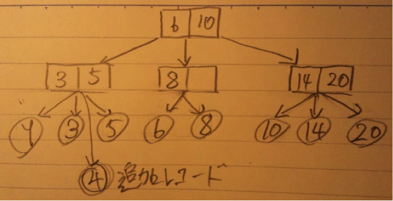
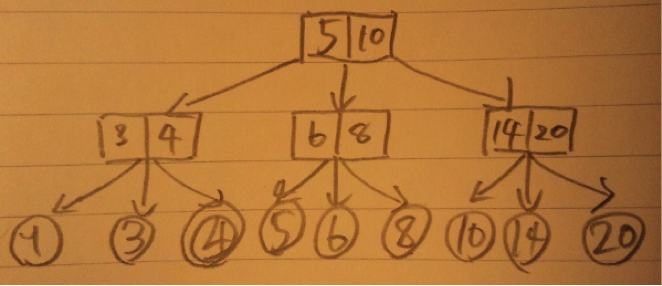

キャッシュ容量が1024ブロックならば、1024通り表せる分のbit数が必要。
1024 = 2^10 なので10bit
32bitのうち、問１よりインデックスが10bit、バイトオフセットが2bitなので、
32 - 10 - 2 = 20 bit がタグフィールドに割り当てられる。
キャッシュ容量：2^nブロック
1ブロック：2^mワード
１ワード：32bit(4byte)
よって
インデックスフィールドがn bit
ブロック内オフセットが m bit
バイトオフセットが 2 bit
であるので、
タグフィールド ： (32 - n - m - 2) bit
16kbyteのデータを保持するキャッシュ
→16*2^10 = 2^4*2^10 = 2^14 byte
1ブロックは４語：4byte * 4 = 16byte
ブロック数：2^14/16 = 2^14/2^4 = 2^10 個のブロック
→10bitのインデックスフィールド
ブロック内オフセットは4=2^2より、2bit
バイトオフセットも4byte = 2^2 byte より 2bit
よってタグフィールドは
32 - 10 - 2 - 2 = 18bit
ブロック数分のエントリ、つまり2^10個のエントリがあり、
１エントリの構成は
有効ビット : 1bit
タグフィールド : 18 bit
データ : 32bit(1語) * 4 = 128bit
合計：147bit/1エントリ
よって 必要な総ビット数は147*2^10bit
例：バス幅、メモリバンク幅が１ワードの場合のミスペナルティ
アドレス送出：1
１ワードあたりのアクセス：15
１ワード送出：1
ミスペナルティは1+(4*15)+4*1 = 65 メモリ・バス・クロック・サイクル
(アドレス送出時間)+（１ワードあたりのアクセス時間）+（ワード送出時間）
バス幅、メモリ幅４倍。
アドレス送出：１
４ワードあたりのアクセス：１５
４ワード送出：1
より、
1 + 15 + 1 = 17 メモリ・バス・クロック・サイクル
インタリーブ方式。
アドレス送出：1*4
4ワードアクセス：１５
１ワード送出：1*4
より、
4+15+4＝23 メモリバスクロックサイクル
・SRAM
フリップフロップ回路で構成される記憶回路。リフレッシュが必要無く非常に高速であるが、回路が複雑で集積度が上げにくく、コストが高いため、大容量化には向かない。高速で小容量であるメモリとしてキャッシュメモリに使われている。
・DRAM
コンデンサとトランジスタで構成された記憶素子。記憶内容が消失しないように一定時間毎に記憶内容を書き直すリフレッシュ操作が必要。SRAMより速度は劣るが、シンプルな構成で集積度を上げやすく、安価に大容量のメモリを実現。低速大容量のメモリとして主記憶に使われている。
SRAMとDRAMを組み合わせて互いの欠点を補うことにより、全体として近似的に高速大容量のメモリを実現する。
・時間的局所性
一度アクセスされたブロックは、近いうちに再度アクセスされる可能性が高いという経験則。最近アクセスされたブロックは追い出しの対象にしないようにすれば、ヒット率を上げることが可能。
・空間的局所性
アクセスされたアドレスの周囲のアドレスは近いうちにアクセスされる可能性が高いという経験則。ブロックはアクセスされたアドレスの近くのアドレスもまとめてブロックとして送るので、この経験則に適う。
真ん中の子の中で最も左（値の小さい）の葉の値と、右の子の中で最も左の葉の値。
子が２つの場合は右の子の中で最も左の葉の値。
図３の例では、根はr4の６,r6の１０を保持することにより、６より小さい値は左の子で、６以上で１０より小さい値は真ん中の子、１０以上の値は右の子であると分類出来る。
中間ノードも同様であり、例えばr1,r2,r3の親ノードには、r1,r2の値を保持する。
★Java
class node{
int num1,num2;
node left = new node();
node mid = new node();
node right = new node();
node(){
num1=0; num2=0;
this.left = null;
this.mid = null;
this.right = null;
}
}
★C
struct node{
int num1,num2;
node *left,*mid,*right;
}
range(x,y) x以上y以下のレコードを全て探す。
バックトラック法の要領で検索途中のノードのアドレスをスタックに保持しておく。
１， ｘを問１で示した性質に従って検索する。
２， 発見したら４へ。見つからない場合はxをインクリメントして根から検索し直す。
３， x > y なら検索失敗として終了。 x<=yなら１へ戻る。
４， 値を出力
５， 必要なだけ親ノードに戻り、右隣の葉に移動。
６， 葉の値 > y または 右隣の葉が無い場合は終了。それ以外は４へ。
ノードが保持する情報を A , B 。または子が２つのときは A 。追加するレコードをXとする。
１， X<Aなら左の子へ。A<X<Bなら真ん中の子へ。B<=Xなら右の子へ移動する。
２， １を葉ノードの親ノードに着くまで繰り返す。
３， Xと２つの葉ノードを昇順にソートし、中間の値と最大の値を親ノードの保持する情報として追加終了。既に３つの葉がある場合は４へ。
４， 木の再構成を行う必要がある。３つの葉とXでソートし、はみ出た葉を葉の空きがあるノードへ移動し、ノードの情報を問１で挙げたものに従って書き換えて終了。葉の空きが１つもない場合は５へ。
５， 木の高さを１段増やして該当するノードへXを追加する。

レコード４を追加すると葉が４つになってしまうので、木の再構成を行うと、
